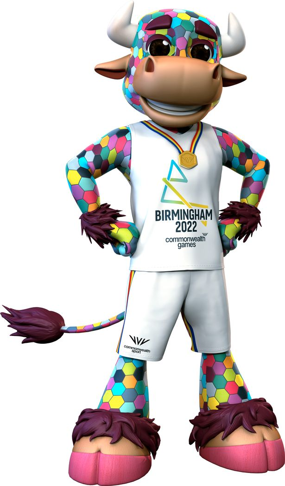

Palatine Perry
Perry was the official mascot of the 2022 Commonwealth Games in Birmingham, England.
The organisers named him Perry after Perry Barr, the area of Birmingham
where the games' primary venue, Alexander Stadium is located.
- He is a bull in reference to Birmingham's historic Bull Ring market
- Perry is a multi-coloured bull who sports hexagonal-coloured shapes, a gold medal and a big pair of horns.
- A bull adorned with a patchwork of multi-coloured hexagons called Perry

Back to index